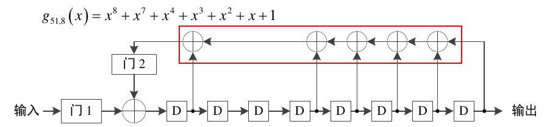
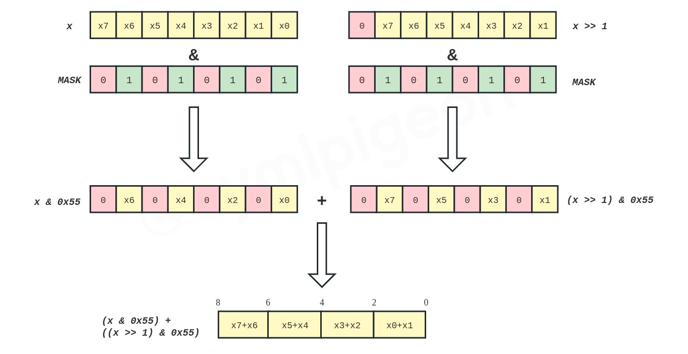
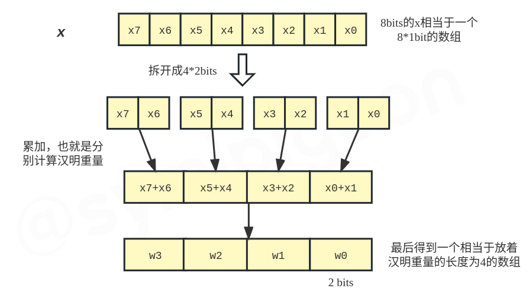
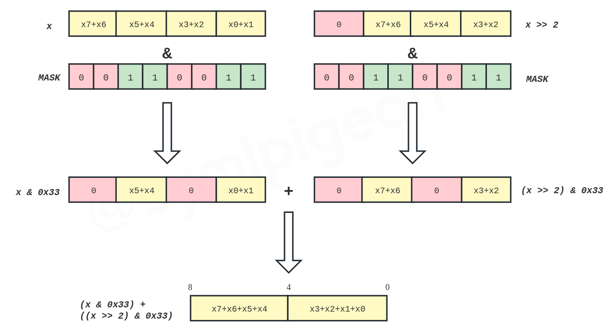
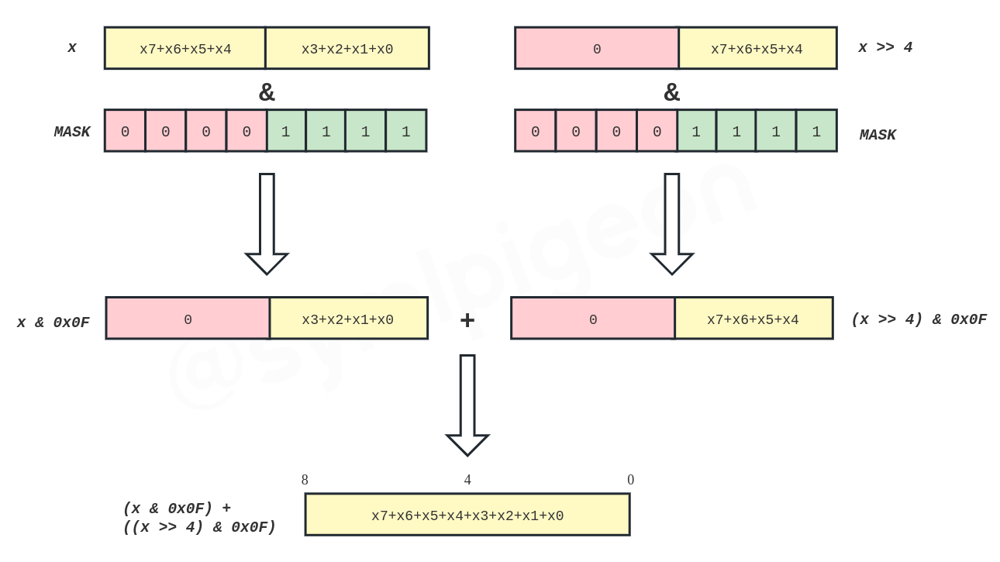
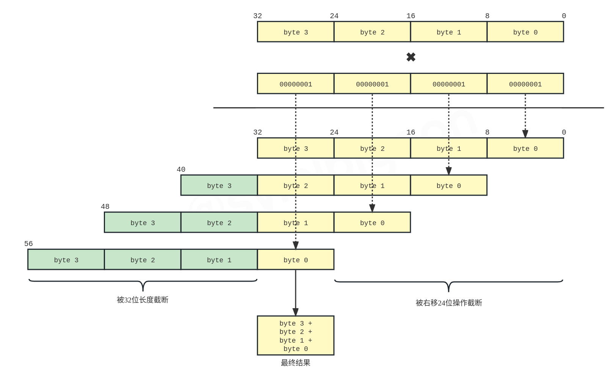

在写毕设的时候，实现 BCH 编码器的时候要用到 LFSR，当时在想着这个 LFSR 如果逐级迭代的话那是真的太傻了。

不用什么太数学的方法，如果确实硬去做的话，这个得重复不少次的异或操作……
反正不太好看。于是乎就考虑能否回避掉这些操作。
如果记寄存器的值是 reg ，多项式系数 g 的话，其实想想，这里的这一堆异或实际上也就相当于在计算 的汉明重量然后取最低位嘛。
于是乎去 Google "how to calculate hamming weight of a number"，结果找到了这个算法。
# 实现
这个算法的原理说实话还真的不是很好讲，先放上来最终的代码实现：
def uint32_swar(x: np.uint32) -> np.uint32: | |
x = np.uint32((x & 0x55555555) + ((x >> 1) & 0x55555555)) | |
x = np.uint32((x & 0x33333333) + ((x >> 2) & 0x33333333)) | |
x = np.uint32((x & 0x0F0F0F0F) + ((x >> 4) & 0x0F0F0F0F)) | |
x = (x * 0x01010101) >> 24 | |
return x |
基本上原版本都是 C 的实现，但是 Python 实现也没太大的差别，用的 np.uint32 差不多实际上也就是 C……
# 解析
Variable-Precision SWAR 算法（后面就写作 SWAR 了）用的算是一个分治的思想。 uint32 说实话太大了，不妨拿 uint8 来说。
def uint8_swar(x: np.uint8) -> np.uint8: | |
x = np.uint8((x & 0x55) + ((x >> 1) & 0x55)) | |
x = np.uint8((x & 0x33) + ((x >> 2) & 0x33)) | |
x = np.uint8((x & 0x0F) + ((x >> 4) & 0x0F)) | |
return x |
可以看到这个相较于上面的 uint32 的实现，代码少了一截，这个等一会再说，先看这里已有的代码。
# 0b01—— 第一次迭代
很明显大家都知道，1 的汉明重量是 1，0 的汉明重量是 0。把它们加起来，我们发现了一个简单的规律：两个 1-bit 的数相加的结果等于它们的汉明重量的和。 换句话说，计算汉明重量也就是把一个二进制数中的所有位累加起来。
嗯，很简单，我们知道了怎么去计算一个 2 位二进制数的汉明重量：
weight = (x & 0b01) + ((x >> 1) & 0b01) |
其实到了这里也就有了上面第一行代码的雏形。
x = np.uint8((x & 0x55) + ((x >> 1) & 0x55)) |
如果我们展开 0x55 ，也就是 0b01010101 。这也就是相当于对输入的 x 的每两位累加一次汉明距离：

首先我们计算的 x & 0x55 取出了 x 的所有偶数位（第 0、2、4…… 位），奇数位被置为了 0。而另外一边的 (x >> 1) & 0x55 相当于取出了所有的奇数位放在了偶数位上（第 1 位到了第 0 位，第 3 位到了第二位……），原本的奇数位被置为了 0。
接下来将两者相加，实际上也就是对每个连续的两位进行相加，第 0 位相加结果放在 0 和 1 两位，第 2 位相加结果放在了 2 和 3 两位，以此类推。
而两个 1-bit 的数相加的结果等于它们汉明重量的和，也就是说现在的第 0 和 1 两位代表的数字就是 x & 0x55 和 (x >> 1) & 0x55 的第 0 位的汉明重量和，也就是原本输入的 x 的低两位的汉明重量。以此类推。
这样子，这一步的操作也就相当于把原本 8bits 的数字拆成了 4 个 2bits 的数字，并分别计算了汉明重量存储在对应的位置。

# 0b0011—— 第二次迭代
我们现在已经实现了相邻两位计算汉明重量，不过显然，要得到最终的结果我们还需要把它们累加起来。
在前面一步的基础上，我们应该把 1 和 0 两位与 3 和 2 两位累加，把 5 和 4 两位与 7 和 6 两位累加。
仅仅考虑低 4 位的话，不难写出这样的代码：
weight = (x & 0b0011) + ((x >> 2) & 0b0011) |
而回过头看前面代码的第二步：
x = np.uint8((x & 0x33) + ((x >> 2) & 0x33)) |
显然 0x33 拆开来便是 0b00110011 。同样的，用一张图来说明这一步做了什么：

那么这一步便是相当于把原先 4 个 2bit 的数字合并成 2 个 4bit 的数字，低 4bit 对应着低 4 位的汉明重量，高 4bit 对应着高 4 位的汉明重量。
# 0b00001111—— 第三次迭代
类似的，我们可以进行第三次迭代，把低 4bit 和高 4bit 进行叠加，就能够得到 uint8 的汉明重量了。
weight = (x & 0b00001111) + ((x >> 4) & 0b00001111) |
这一步实际上和前面的代码的第三步是一样的了：
x = np.uint8((x & 0x0F) + ((x >> 4) & 0x0F)) |
注意 0x0F 也就是 0b00001111 。继续用一张图来说明：

对于 uint8 ，至此汉明重量的计算完毕。
# 继续向后延伸
实际上对于 uint32 来说，一个更加便于理解的 SWAR 算法应该是这样实现的：
def uint32_swar(x: np.uint32) -> np.uint32: | |
x = np.uint32((x & 0x55555555) + ((x >> 1) & 0x55555555)) | |
x = np.uint32((x & 0x33333333) + ((x >> 2) & 0x33333333)) | |
x = np.uint32((x & 0x0F0F0F0F) + ((x >> 4) & 0x0F0F0F0F)) | |
x = np.uint32((x & 0x00FF00FF) + ((x >> 8) & 0x00FF00FF)) | |
x = np.uint32((x & 0x0000FFFF) + ((x >> 16) & 0x0000FFFF)) | |
return x |
不难理解，在前面说的三个步骤的基础上， 0x00FF00FF 一步以 8 个 bit 为单位进行计算，将 4 个 8bit 汉明距离处理成两个 16bit 的汉明距离，而 0x0000FFFF 以 16bit 为单位进行计算，将两个 16bit 的汉明距离计算得到一个 32bit 的汉明距离，也就是最后的结果。
而对于 64 位的情况，那就是把 32 位的数字扩增一倍，额外再加上一个用 0x00000000FFFFFFFF 进行操作便可以了。
不过看到上面的 uint32_swar 实现并没有用到 0x00FF00FF 和 0x0000FFFF ，而是将 x 乘以 0x01010101 并右移 24 位，why？

如图，我们做一个乘法，注意图中 24 到 31 位的位置。32 位以上的数据因为 32 位乘法的长度限制被截断，从而乘法的结果只有低 32 位，而右移 24 位之后，低 24 位被舍去，只剩下 24 到 31 位，这一部分就是原始数据的累加结果，也就是汉明距离。